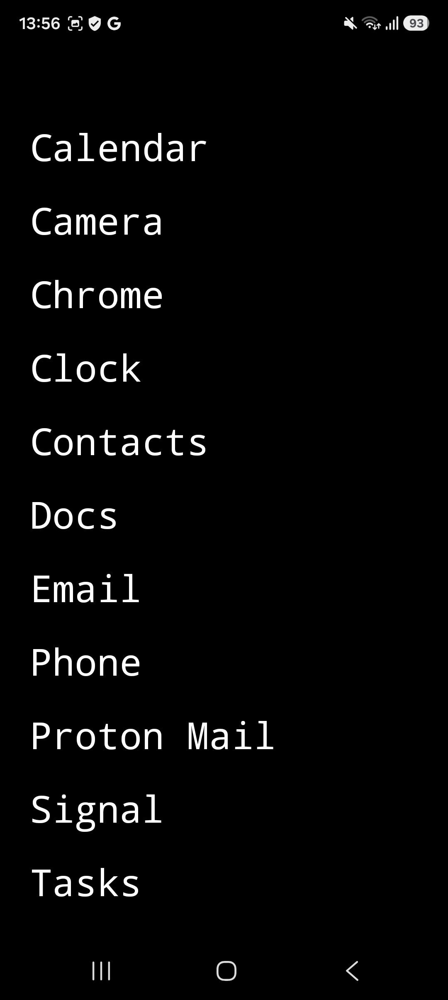
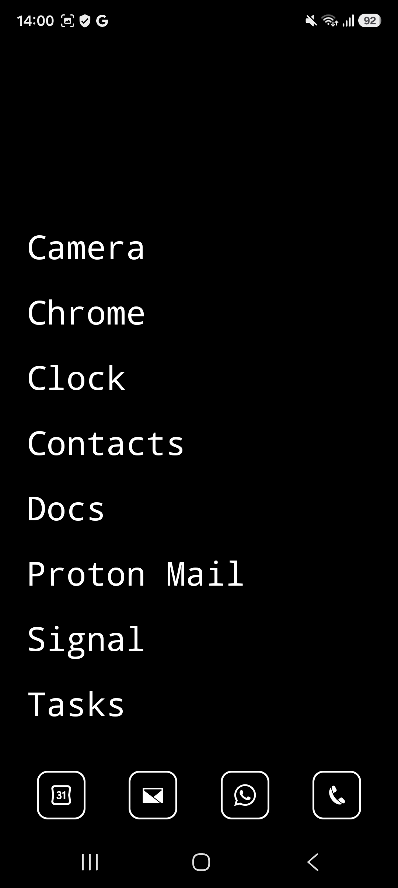
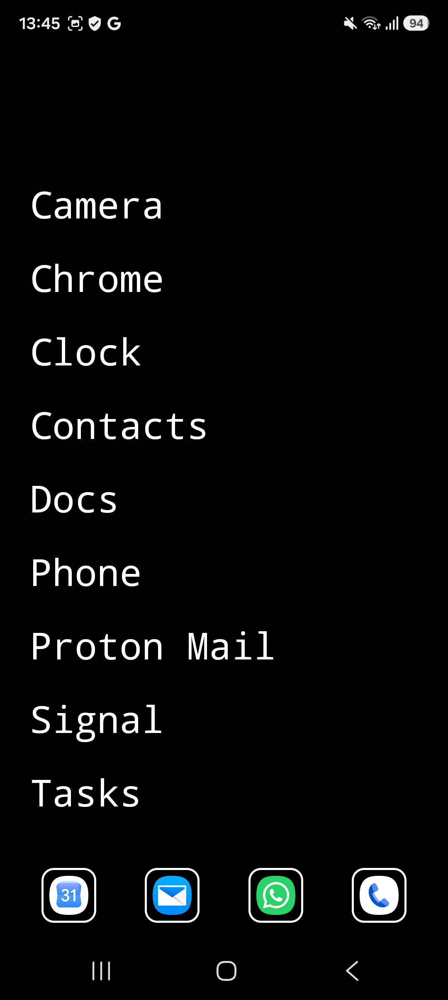
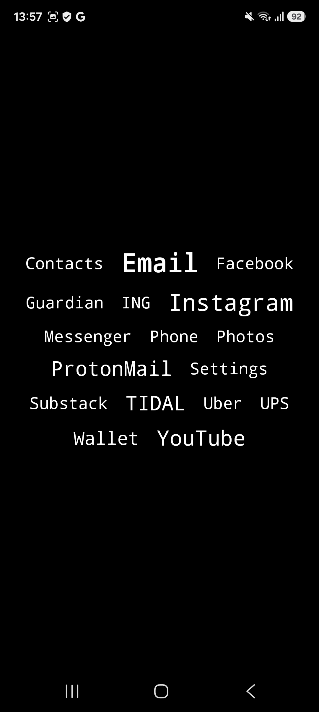
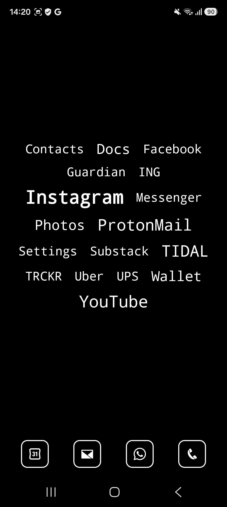
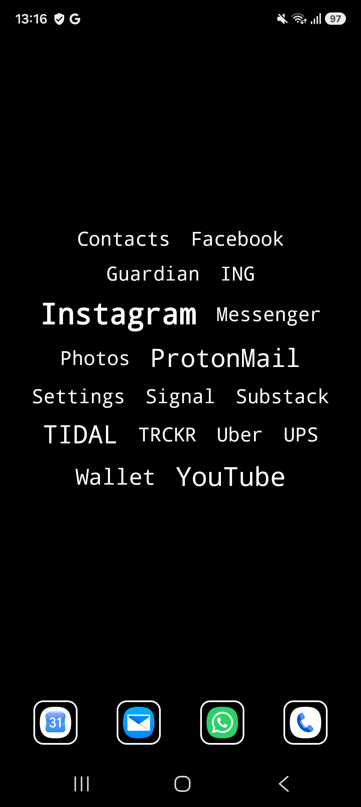
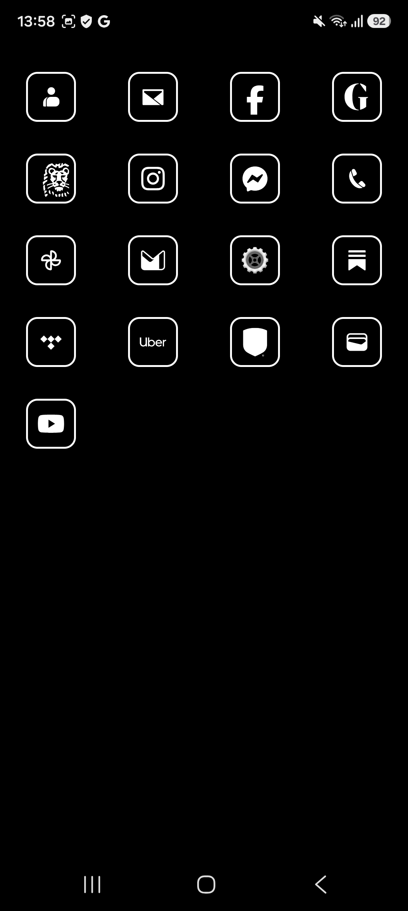
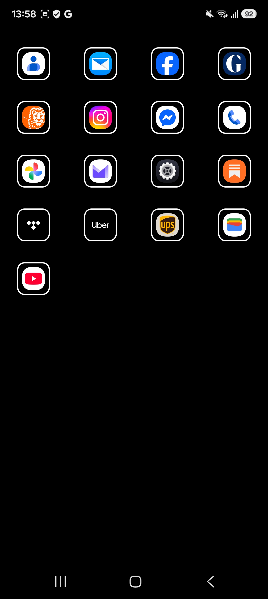
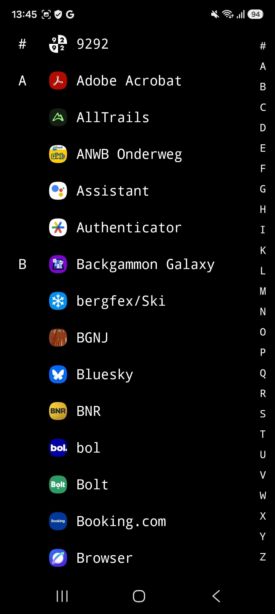
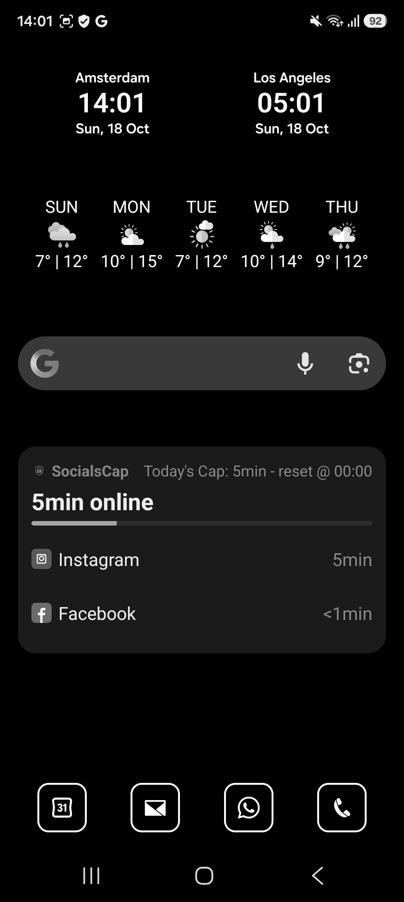
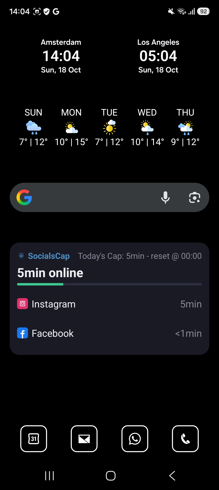
- mo·di·cus /ˈmɔ.dɪ.kʊs/ Latin, adjective
- 1. moderate, of measured size
- 2. modest, restrained
- From modus, measure. The same root gives English modicum: a small amount.
A quiet home screen.
modicus is a home screen for Android that shows your apps as plain text, in black and white. No colorful icons, no badges, no wallpaper. Your phone asks for less of your attention.
Free to use, every feature. No ads, no subscription. Only the optional widgets screen is a one-time € 2,99.
Three ways to show your favorites
Choose a-z, cloud or icons. With a-z and cloud you can add the quick menu, a row of apps at the bottom. The icons view can be monochrome or full color.
Rather not pick your favorites yourself? Switch on [x] learn by itself. Favs then shows the apps you opened most lately, 5 to 40 of them, your choice. Apps you stop using slowly drop off, so favs keeps up as your habits change.
Every app, one swipe away
Favs keep your home screen short. The rest is never far: swipe once for all your apps, a to z.
Slide along the letter bar to jump to a letter. Not every app has a clear name, so you can add a small icon in front of each one and spot it at a glance.
What it does
- [x] Favs, all and settings, one swipe apart
- [x] Every app a to z, one swipe away, with a letter bar
- [x] Favs can fill itself with the apps you open most
- [x] A quick menu row for the apps you use all the time
- [x] Optional notification dots: which app, never what it says
- [x] Icons and widgets in full color, if you prefer
- [x] Monospace or sans-serif, size 16 to 26
- [x] Follows your phone's light or dark setting
- [x] No animations: taps act straight away
- [ ] Search
- [ ] Folders or hidden apps
- [ ] Icon packs, themes or colors
- [ ] A clock or weather of its own
Some people find monochrome hard to read, so color is one switch away.
Widgets, if you want them
Premium adds a widgets screen: a clock, the weather or your calendar, shown in black, white and gray to match, or in full color if you prefer. One purchase of € 2,99, no subscription. It works offline.
Nothing leaves your phone
modicus has no internet access.
- [x] The internet permission is removed from the app
- [x] No ads, no tracking, no analytics, no account
- [x] Favorites, settings and usage stay on your phone
- [x] The only outside contact is Google Play, for premium
Getting started
modicus works on Android 10 and newer. Install it, then choose it once as your default home app. You can switch back any time in Android's settings, under default apps.